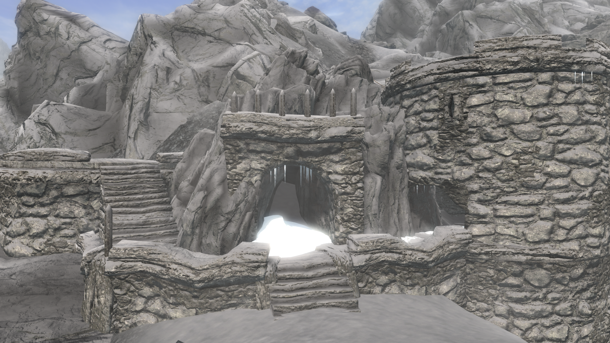
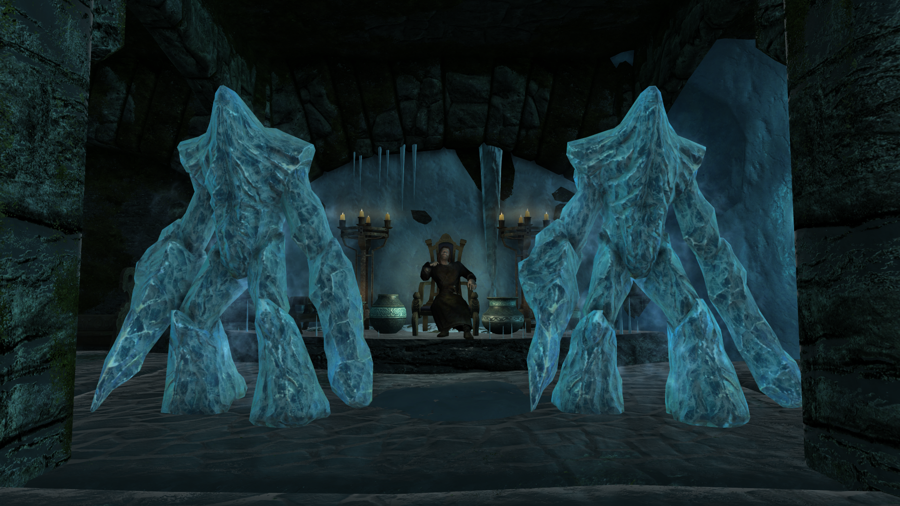

Winter's Grasp
(Originally posted on 30.09.2018)

What
A mod for Elder Scrolls V: Skyrim
A small fort located between Windhelm and Winterhold
Inhabited by hostile Frost Warlocks
Why
Make frost magic as powerful as fire and shock magic. As many creatures of Skyrim are resistant or completely immune to frost, it is usually too big of an disadvantage to focus on frost magic. This mod contains a balanced destruction frost spell which bypasses all frost resistance, giving the player a chance to survive as a full-fledged frost mage.
Design
The fort is an action driven linear level
It favors sneaky and ranged characters while being more challenging for melee fighters
Designed to support player agency. This means, that when the player enters a room she has chance to evaluate the situation and choose her strategy
Aesthetically it seeks to combine Ice Cave and Imperial Fort styles.
Simplistic lighting and clutter to implicitly guide the player to the preferred path and advantageous spots
Notable Loot
Winter’s Grasp spell
Adept level, 30 pts of frost damage per second. Bypasses Resist Frost effects. Default cost 75 magicka per second.
Staff of Ice Storm
Available
Trailer
Repo
Bethesda (PC)
Bethesda (XBOX)
Nexus (PC)
